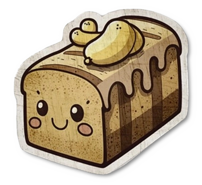

Bez Saxara's Family Constitution
Romance:
Both pumpkin and banana shall say "I love you" at the end of every call or prior to departure from a lover.
A 4-second kiss shall be given if the leave is for more than a few hours long.
Hearts and harmony require a date one day a week, to keep the love at its peak.
Any type of communication shall remain free of jokes or mentions of divorce for a positive outlook on the future.
Pumpkin may dress as she wishes, provided that safety is assured by banana or her accomplices.
Family:
Dreams and comfort shall demand that no phones reside within reach before eyes close, as the night is reserved for joyful rest.
Even in the heat of disagreement, no cursing and no name-calling shall occur, for respect, patience, and understanding must prevail.
In the presence of conflict between banana and pumpkin, disagreements shall be kept private, away from children, relatives, and the public.
Pumpkin and banana are responsible for teaching financial literacy should all family members, including children from an early age.
Storytelling should be done by a banana when children are going to bed.
Both partners shall assist each other with household chores and share responsibilities to foster harmony within the household.

Pius Felix Invictus Augustus